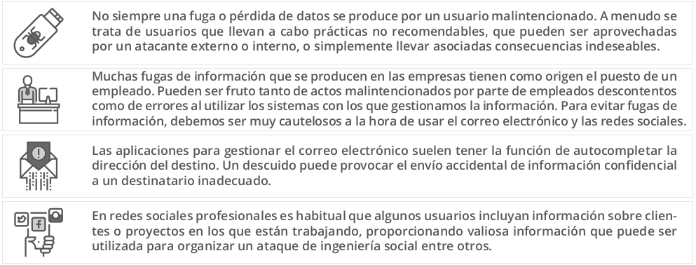
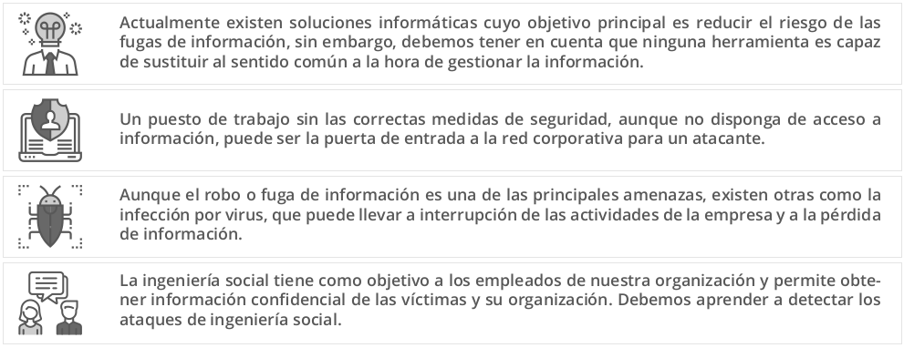
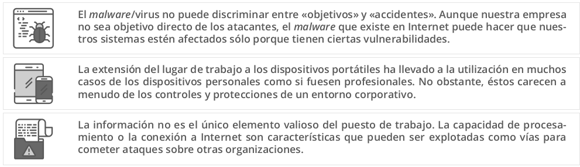
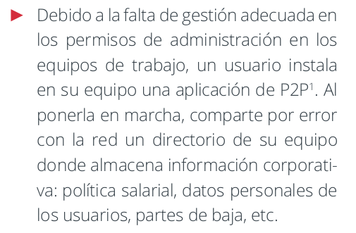
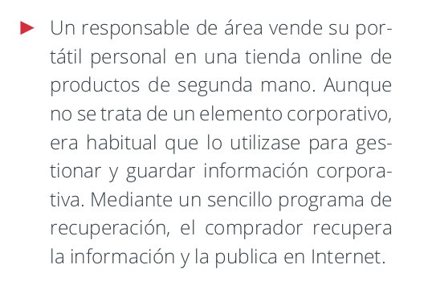
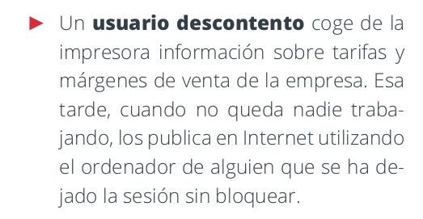
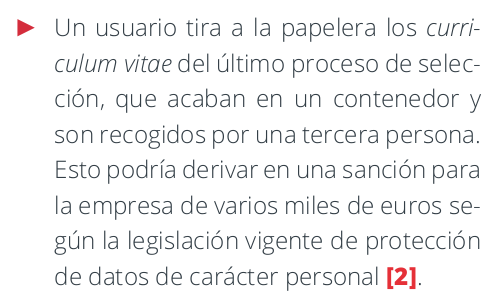
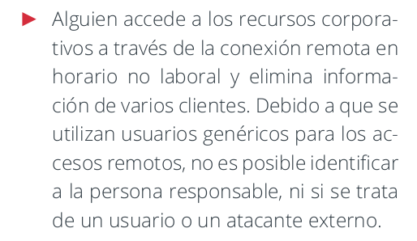

1.3.-Puesto de trabajo
1.3.1. Normativa de protección del puesto de trabajo¶
El puesto de usuario es el lugar donde se realiza el trabajo diario con los sistemas de información. Es el lugar donde se almacena la información y se accede a los sistemas de información. Por tanto, es un lugar crítico en la seguridad de la información.

1. Políticas en el puesto de trabajo¶
Ya que el puesto de trabajo es el lugar donde se almacena y se accede a la información, es un lugar crítico en la seguridad de la información. Por tanto, es necesario establecer una normativa de protección del puesto de trabajo. Haremos una introducción a lo que es un puesto de trabajo y a la importancia de establecer una normativa de protección del puesto de trabajo.
1.1 Puesto de trabajo¶
El puesto de trabajo del usuario es el lugar desde el cual un empleado común realiza su trabajo diario, accediendo a sistemas, aplicaciones y datos que necesita para cumplir con sus tareas. Este puesto puede ser físico (una computadora de escritorio en la oficina) o remoto (una laptop desde casa o un café). El “usuario” suele ser un empleado no especializado en tecnología, que accede a los recursos de la empresa principalmente para realizar su función laboral, sin responsabilidad directa en el manejo de la infraestructura o la seguridad de TI.
Ejemplo de puesto de usuario: Una asistente administrativa que trabaja en las instalaciones de la empresa, desde una computadora de escritorio, accediendo al sistema de gestión de documentos de la empresa, el correo electrónico y una plataforma de mensajería interna para coordinarse con su equipo.
1.1.1 Elementos de un puesto de trabajo¶
En el entorno de seguridad informática, el puesto de trabajo es mucho más que el lugar físico donde una persona se sienta a trabajar. Representa el conjunto de elementos que un empleado utiliza para realizar sus tareas. Algunos son: dispositivos, software, acceso a redes, instalaciones físicas, acceso a datos y el propio empleado.
Algunos ejemplos de un puesto de trabajo pueden incluir:
- Dispositivos hardware: Computadoras de escritorio, laptops, tabletas y teléfonos inteligentes que usa el empleado.
- Software: Aplicaciones necesarias para realizar tareas, desde procesadores de texto hasta herramientas especializadas.
- Comunicación y acceso a la red: Conexiones a internet, VPNs (Redes Privadas Virtuales) para trabajar de forma remota, y acceso a servidores internos de la organización.
- Instalaciones físicas: Dependencías físicas de la empresa, como oficinas, salas de reuniones o áreas de trabajo compartidas.
- Acceso a datos: Permisos para ver, editar o compartir documentos, bases de datos o aplicaciones internas que contienen información valiosa o sensible.
- Personal: El propio empleado, sus hábitos de trabajo y su conocimiento de las políticas de seguridad.
Cada uno de estos elementos, si no se protege correctamente, puede ser una vía de ataque o de fuga de información, por lo que la protección del puesto de trabajo es esencial para reducir riesgos de seguridad.
1.2. ¿Qué es una normativa y por qué es importante?¶
Una normativa en lo referente al puesto de trabajo, es un conjunto de reglas y requisitos específicos que deben cumplirse para garantizar un ambiente de trabajo seguro. En el caso de la protección del puesto de trabajo, estas reglas indican cómo debe gestionarse y asegurarse cada aspecto del puesto para proteger tanto la información como los sistemas de la empresa. La normativa de protección del puesto de trabajo tiene en cuenta las amenazas y posibles vulnerabilidades para definir pautas que protejan los elementos comentados anteriormente, ayudando a minimizar riesgos y mejorar la seguridad general de la organización.
Por ejemplo, una normativa de protección del puesto de trabajo incluirá mayoritariamente medidas preventivas, dejando las de monitorización y correctivas para otras fases del proceso de seguridad. Algunos ejemplos de medidas que pueden incluirse en una normativa de protección del puesto de trabajo son:
- Restricciones de acceso: Especificar quién puede acceder a qué tipo de información o sistema.
- Medidas de seguridad física y digital: Uso de cerraduras físicas en escritorios, contraseñas complejas, y autenticación multifactor (MFA).
- Procedimientos de actualización y parches: Asegurarse de que todo el software esté al día con las últimas actualizaciones de seguridad.
- Buenas prácticas de uso diario: Como bloquear la pantalla al ausentarse, evitar conexiones a redes públicas no seguras, y mantener la información confidencial fuera del alcance de terceros.
1.2.1. ¿Por qué necesitamos una normativa de protección del puesto de trabajo?¶
En cualquier organización, los empleados interactúan con datos y sistemas sensibles a diario. Si el puesto de trabajo no está protegido adecuadamente, podría convertirse en un punto de entrada para ataques cibernéticos o en un riesgo de fuga de información. La normativa establece las reglas que todos los empleados deben seguir para proteger estos recursos y reducir riesgos, no solo para proteger la información de la organización, sino también la privacidad de los empleados y clientes.
Al implementar una normativa de protección del puesto de trabajo, la organización busca:
- Establecer un estándar de seguridad que todos los empleados deben cumplir.
- Proteger los datos y la infraestructura tecnológica frente a amenazas externas e internas.
- Asegurar la continuidad del negocio al reducir la probabilidad de incidentes de seguridad que puedan interrumpir las operaciones.
1.3. Políticas, normativas y procedimientos¶
Relacionados con la normativa de protección del puesto de trabajo, es importante entender la diferencia entre políticas, normativas y procedimientos, ya que cada uno juega un papel distinto en la estructura de seguridad de una organización.
1.3.1. Política (Declaración de Intenciones)¶
Una política es una declaración general que define la intención y los principios de una organización respecto a un tema específico. En seguridad, una política marca el rumbo y establece el marco de referencia que guía las acciones para proteger los activos.
- Ejemplo: Imagina que una empresa crea una política de seguridad de la información que dice: "La empresa XYZ se compromete a proteger la confidencialidad, integridad y disponibilidad de toda la información almacenada y procesada en sus sistemas, de acuerdo con los principios de seguridad y las normativas legales".
- En la práctica: Esta política no da detalles específicos ni instrucciones concretas sobre cómo proteger la información, sino que establece el compromiso general de la empresa hacia la seguridad.
- Importancia de la política: Sirve como "declaración de intenciones" para la organización. Define las bases sobre las cuales se desarrollarán normativas y procedimientos más detallados.
Por tanto, la política es la visión o intención general, como un "norte" o línea guía que orienta las decisiones sobre seguridad.
1.3.2. Normativa (Qué)¶
Una normativa traduce la política en reglas y requisitos más concretos que deben cumplirse para seguir esa política. Es decir, establece qué se debe hacer o cumplir para mantener la seguridad, y a veces quién es responsable de llevarlo a cabo.
- Ejemplo: Siguiendo la política de seguridad de la información, una normativa específica puede ser la normativa de protección del puesto de trabajo. Esta normativa podría incluir medidas como:
- "Todo empleado debe bloquear su pantalla al ausentarse del escritorio".
- "Se requiere que todas las contraseñas de usuario tengan al menos 10 caracteres e incluyan letras, números y símbolos".
- "Los empleados deben realizar un curso básico de seguridad informática cada seis meses".
- En la práctica: La normativa detalla requisitos claros en base a medidas que los empleados y los sistemas deben cumplir. No describe cómo hacerlo (ese es el trabajo del procedimiento), sino que define las condiciones que deben cumplirse.
- Importancia de la normativa: Proporciona una capa de control y dirección más concreta que la política, ayudando a mantener una estructura de cumplimiento y a reducir riesgos.
Por tanto, la normativa establece medidas específicas y requisitos que deben cumplirse para estar alineados con la política de seguridad.
1.3.3. Procedimiento (Cómo)¶
Un procedimiento detalla los pasos específicos que deben seguirse para cumplir con la normativa y, por ende, con la política. Responde a la pregunta de cómo hacer algo. Los procedimientos suelen ser detallados y prácticos, y pueden incluir capturas de pantalla, ejemplos o listas paso a paso.
- Ejemplo: Si la normativa de protección del puesto de trabajo exige "bloquear la pantalla al ausentarse", el procedimiento explicará cómo hacerlo en diferentes sistemas operativos:
- Windows: “Presiona
Win + Lpara bloquear la pantalla”. - MacOS: “Presiona
Control + Command + Qo configura el bloqueo automático desde Preferencias del Sistema”. - Linux: “Configura el bloqueo de pantalla en las preferencias o presiona
Super + L”.
- Windows: “Presiona
- En la práctica: Este procedimiento ofrece las instrucciones detalladas de cómo cada usuario puede cumplir con el requisito de la normativa.
- Importancia del procedimiento: Los procedimientos eliminan la ambigüedad sobre cómo realizar una tarea específica. Son muy útiles para nuevos empleados, para procesos de auditoría y para asegurar que todos los empleados tengan claridad sobre las acciones que deben seguir.
Por lo tanto, los procedimientos son guías prácticas y detalladas sobre cómo realizar acciones específicas para cumplir con la normativa.
1.3.4. Medidas de Seguridad¶
Para implementar una protección efectiva en cualquier organización, es importante entender cómo se clasifican las medidas de seguridad en función de su nivel de complejidad y su alcance. Este enfoque permite aplicar controles de manera eficiente, adaptándolos a las necesidades específicas de cada área y personal.
Un enfoque equilibrado y bien estructurado, donde medidas básicas y avanzadas se combinen a través de procesos, tecnología y personas, contribuye a la creación de un entorno de trabajo seguro y eficiente.
Niveles de Complejidad de las Medidas de Seguridad¶
Las medidas de seguridad pueden clasificarse en dos niveles de complejidad, que determinan el esfuerzo y los recursos necesarios para su implementación:
-
Básico (B): Este nivel es asequible y relativamente sencillo de implementar.
- Las medidas de nivel básico requieren pocos recursos y suelen aplicarse mediante funcionalidades ya incorporadas en herramientas y aplicaciones comunes.
- Son ideales para proteger datos y activos sin necesidad de configuraciones avanzadas o personal altamente especializado.
Ejemplo de medida básica (B):
- Bloqueo de pantalla: Configurar el bloqueo automático de los dispositivos tras un breve periodo de inactividad. Esta funcionalidad está incluida en la mayoría de sistemas operativos (Windows, MacOS) y no requiere un esfuerzo adicional considerable.
- Política de escritorio limpio: Consiste en pedir a los empleados que mantengan sus escritorios libres de documentos o dispositivos con información sensible cuando no están presentes. Esta medida es fácil de implementar y solo requiere concienciación del personal. -
Avanzado (A): Este nivel requiere una inversión significativa en términos de recursos, esfuerzo y conocimientos técnicos.
- Las medidas avanzadas suelen involucrar configuraciones complejas y, a veces, herramientas adicionales de seguridad. También pueden incluir mecanismos de recuperación ante fallos, como sistemas de respaldo y restauración.
- Son esenciales en áreas de alto riesgo o donde la protección de datos críticos es una prioridad.
Ejemplo de medida avanzada (A):
- Cifrado de disco completo: En sistemas que almacenan datos confidenciales, se configura el cifrado de disco completo (como BitLocker en Windows o FileVault en MacOS) para proteger la información ante un posible robo o pérdida del dispositivo.
- Política de copias de seguridad: Aplicar una política de copias de seguridad automatizada, que incluya la configuración de respaldos regulares y la verificación de la integridad de las copias de seguridad. Esto implica conocimientos técnicos y una configuración detallada.
Alcance de las Medidas de Seguridad¶
Las medidas de seguridad también pueden clasificarse según el alcance o el tipo de destinatario al que se aplican, en tres grandes categorías: Procesos (PRO), Tecnología (TEC) y Personas (PER).
-
Procesos (PRO): Las medidas de procesos son aquellas que aplican principalmente a la dirección o al personal de gestión. Estas medidas aseguran que se establezcan procedimientos y políticas claras para proteger la información en toda la organización.
Ejemplo de medida de proceso (PRO):
- Procedimiento de verificación de pagos: Antes de aprobar el pago de una factura, el equipo de gestión debe validar los datos del proveedor. Esta medida implica la creación de un proceso seguro que controle el flujo de pagos para evitar fraudes.
- Revisión de permisos de acceso: La dirección revisa periódicamente los permisos de acceso del personal para asegurarse de que cada empleado tenga solo los permisos necesarios para su rol, limitando así el riesgo de acceso no autorizado a información sensible. -
Tecnología (TEC): Las medidas tecnológicas están dirigidas al personal técnico y requieren conocimientos avanzados. Estas medidas implican el uso de herramientas, configuraciones especializadas o sistemas de seguridad que protegen la infraestructura y los datos.
Ejemplo de medida de tecnología (TEC):
- Implementación de un firewall: El equipo de TI instala y configura un firewall para controlar el tráfico de red y evitar accesos no autorizados a la red corporativa. Esto requiere conocimientos técnicos para su configuración y monitoreo.
- Política de copias de seguridad: Se establece un sistema de copias de seguridad periódicas, que el equipo de TI gestiona y verifica para asegurar la recuperación de datos en caso de fallos o incidentes.
3. Personas (PER): Estas medidas están orientadas a todo el personal de la organización y suelen ser sencillas de aplicar. A través de estas, los empleados se conciencian sobre buenas prácticas de seguridad y sobre cómo contribuir a la protección de la información.Ejemplo de medida para personas (PER):
- Política de escritorio limpio: Los empleados deben asegurarse de no dejar documentos o dispositivos con información sensible desatendidos en sus escritorios al finalizar su jornada laboral o al ausentarse.
- Capacitación en seguridad de la información: Todos los empleados reciben capacitación anual sobre buenas prácticas de seguridad y cómo identificar amenazas comunes, como el phishing.
Por lo general, las medidas orientadas a las personas (PER) están complementadas por medidas de procesos (PRO) y tecnología (TEC), asegurando que se implemente una protección completa y eficaz en toda la organización. Por ejemplo, una capacitación sobre ciberseguridad (PER) puede ir acompañada de un procedimiento de auditoría de accesos (PRO) y el uso de autenticación multifactor (TEC) en sistemas críticos.
1.3.5. Ejemplo Completo:¶
Cada nivel aporta un grado de especificidad creciente y va dirigido a distintos aspectos de la estructura organizativa de seguridad.
- Política de Seguridad de la Información: "XYZ se compromete a proteger la información de acuerdo con altos estándares de seguridad".
- Normativa de Protección del Puesto de Trabajo: "Todos los empleados deben bloquear sus equipos al ausentarse".
- Procedimiento de Bloqueo de Pantalla: "Para bloquear la pantalla, usa
Win + Len Windows,Control + Command + Qen MacOS, ySuper + Len Linux".
1.4. Estándares a aplicar¶
Cuando hablamos de normativas de protección del puesto de trabajo, es importante tener en cuenta que existen diferentes estándares y regulaciones que pueden influir en la definición de estas normativas, por tanto, las compañías deben conocerlas. Algunas de las normativas más comunes en el ámbito de la seguridad de la información son:
1.4.1. ISO/IEC 27001: Estandarización en la Seguridad del Puesto de Trabajo¶
La ISO/IEC 27001 es el estándar internacional para la gestión de la seguridad de la información, aplicable a todos los aspectos de la seguridad en la organización, incluidos los puestos de trabajo.
¿Cómo ayuda con la política del puesto de trabajo?
- Estructura de gestión de la seguridad: ISO/IEC 27001 proporciona una guía para crear un Sistema de Gestión de Seguridad de la Información (SGSI), que asegura la protección de todos los elementos del puesto de trabajo (dispositivos, software, accesos) dentro de un marco estandarizado.
- Control de acceso y uso seguro: Dentro de su Anexo A, el estándar incluye controles como la seguridad en las estaciones de trabajo y el control de accesos, lo que es fundamental para definir cómo los empleados deben proteger sus dispositivos y datos.
- Evaluación y mitigación de riesgos: Este estándar promueve el análisis y gestión de riesgos específicos de cada puesto, permitiendo identificar y tratar amenazas en el puesto de trabajo, como el uso no autorizado de dispositivos, la conexión en redes inseguras o el acceso a información sensible.
Ejemplo práctico: Siguiendo ISO 27001, puedes establecer una política que obligue a los usuarios a bloquear sus pantallas al dejar su escritorio o que requiera autenticación multifactor en los dispositivos de trabajo.
1.4.2. GDPR (General Data Protection Regulation): Protección de Datos Personales en el Puesto de Trabajo¶
El GDPR es la regulación de protección de datos de la Unión Europea, centrada en proteger la privacidad y los datos personales de los ciudadanos.
¿Cómo ayuda con la política del puesto de trabajo?
- Confidencialidad y seguridad de datos: El GDPR establece que cualquier puesto de trabajo que maneje datos personales debe protegerlos, lo que implica políticas para limitar el acceso solo a quienes realmente lo necesitan y medidas de seguridad como el cifrado y el uso de contraseñas seguras.
- Seguridad en el acceso y almacenamiento de datos: Exige que la información personal se almacene y procese de forma segura, promoviendo políticas que regulen cómo los empleados deben acceder, compartir y proteger la información desde sus puestos.
- Gestión de incidentes: Incluye requisitos sobre cómo notificar y responder a incidentes de seguridad que afecten datos personales, lo cual es esencial en la política de uso y protección de los dispositivos de trabajo.
Ejemplo práctico: Puedes desarrollar políticas para asegurar que los empleados manejen los datos personales de forma segura, como el uso obligatorio de conexiones VPN para acceder remotamente a los sistemas de la empresa, cumpliendo así con el GDPR.
1.4.3. LOPDGDD (Ley Orgánica de Protección de Datos y Garantía de Derechos Digitales): Cumplimiento en España para el Puesto de Trabajo¶
La LOPDGDD es la ley española que complementa al GDPR y que regula el tratamiento de los datos personales en España, incorporando derechos y regulaciones adicionales.
¿Cómo ayuda con la política del puesto de trabajo?
- Protección de la privacidad del empleado y cliente: La LOPDGDD establece requisitos para garantizar la privacidad y el manejo seguro de los datos personales tanto de empleados como de clientes, lo cual es crucial para los usuarios en sus puestos de trabajo.
- Derechos digitales de los empleados: La LOPDGDD también incluye derechos específicos, como el derecho a la desconexión digital, lo que puede traducirse en políticas de horario de acceso y uso de dispositivos de trabajo para respetar el equilibrio laboral y personal.
- Políticas de acceso a datos sensibles: Exige políticas claras sobre quién puede acceder a qué tipo de datos personales, lo que se puede aplicar en el puesto de trabajo asegurando que solo quienes tengan autorización accedan a información confidencial.
Ejemplo práctico: Con la LOPDGDD, puedes crear políticas para limitar el acceso a datos personales a usuarios específicos según sus funciones, y también definir políticas de desconexión digital para proteger los derechos de los empleados.
2. Escenarios de riesgos y medidas de seguridad¶
Comprender los elementos clave de un puesto de trabajo, nos ayudan a entender los factores vulnerables de un puesto de trabajo y, por tanto, identificar los escenarios de riesgo y asi diseñar normativas en base a medidas de seguridad efectivas.
Las medidas de seguridad que se establecen en la normativa de protección del puesto de trabajo deben ser proporcionales a los riesgos identificados y deben ser claras y fáciles de seguir para los empleados. Estas estarán formadas por un conjunto de pautas aplicables a los sistemas de la organización y de métodos utilizados para monitorizar su eficacia en la protección de los activos y el cumplimiento por parte de los empleados.
Las medidas de seguridad se pueden clasificar en:
- Preventivas: Aquellas que buscan evitar que ocurran incidentes de seguridad.
- Monitorización: Aquellas que buscan identificar incidentes de seguridad en el momento en que ocurren.
- Correctivas: Aquellas que buscan corregir los incidentes de seguridad una vez que han ocurrido, y restaurar la operatividad normal de los sistemas.
En el caso de la protección del puesto de trabajo, las medidas de seguridad preventivas son las más comunes, ya que buscan evitar que los incidentes de seguridad ocurran en primer lugar.
A continuación, desglosaremos estos elementos componentes del puesto de trabajo y mostraremos cómo cada uno se relaciona con los distintos escenarios de riesgo y con la necesidad de establecer políticas, normativas y procedimientos claros.
2.1 Dispositivos de Hardware¶
Los dispositivos de hardware son los equipos físicos que los empleados utilizan para realizar su trabajo y acceder a los sistemas de la organización. Dado que son el punto de acceso principal a la información corporativa, representan un componente crítico en la seguridad de la información y un punto vulnerable si no están adecuadamente protegidos.
Elementos incluidos: Computadoras de escritorio, laptops, tabletas, teléfonos inteligentes y cualquier otro dispositivo físico utilizado en el entorno de trabajo.
2.1.1 Escenarios de Riesgo Asociados¶
-
Pérdida o Robo de Dispositivos
- Riesgo: La pérdida o el robo de un dispositivo físico puede exponer datos confidenciales y credenciales de acceso si cae en manos de personas no autorizadas. Esto es especialmente crítico si el dispositivo se utiliza fuera de las instalaciones de la empresa y no cuenta con medidas de seguridad avanzadas, como el cifrado.
- Consecuencias: Una persona no autorizada con acceso físico al dispositivo puede recuperar información confidencial, acceder a sistemas de la organización o modificar datos importantes.
Política: La organización se compromete a proteger todos los dispositivos de trabajo con medidas de seguridad que garanticen la integridad, confidencialidad y disponibilidad de la información almacenada y procesada ante cualquier incidente.
Normativa:
- Todos los dispositivos deben estar protegidos mediante autenticación segura, como contraseñas complejas y, cuando sea posible, autenticación multifactor (MFA).
- Los dispositivos deben configurarse para bloquearse automáticamente tras un periodo de inactividad de 5 minutos.
- Todo dispositivo de trabajo que contenga datos confidenciales debe contar con cifrado de disco.
Procedimiento:
- Activación del bloqueo automático: Instrucciones detalladas para configurar el bloqueo automático en dispositivos con diferentes sistemas operativos, como Windows, MacOS y dispositivos móviles.
- Configuración del cifrado de disco: Pasos para activar el cifrado de disco en dispositivos compatibles (Windows BitLocker, MacOS FileVault) y verificar su estado de activación.
- Reporte de pérdida o robo de dispositivos: Proceso para notificar al departamento de TI en caso de pérdida o robo, incluyendo información relevante del dispositivo y las acciones inmediatas que deben seguirse para mitigar el riesgo.
-
Acceso No Autorizado
- Riesgo: Si un dispositivo queda desbloqueado cuando el usuario se ausenta o si no cuenta con autenticación robusta, personas no autorizadas pueden acceder a información confidencial o realizar acciones no autorizadas.
- Consecuencias: Esto podría comprometer la confidencialidad y seguridad de la información, permitiendo que personas sin autorización accedan o manipulen datos en el sistema de la organización.
Política: La organización se compromete a proteger todos los dispositivos de trabajo con medidas de seguridad que garanticen la integridad, confidencialidad y disponibilidad de la información almacenada y procesada ante cualquier incidente.
Normativa:
- Los dispositivos de trabajo deben configurarse para bloquearse automáticamente después de un breve periodo de inactividad.
- Los usuarios deben autenticar su identidad mediante contraseñas seguras y, siempre que sea posible, activar la autenticación biométrica (como huellas dactilares o reconocimiento facial).
Procedimiento:
- Establecimiento de contraseñas seguras: Instrucciones para crear contraseñas que cumplan con los requisitos de seguridad, como una longitud mínima y combinación de caracteres especiales.
- Configuración de autenticación biométrica: Guía para activar y utilizar autenticación biométrica en dispositivos compatibles.
- Bloqueo manual del dispositivo: Recordatorio para bloquear manualmente el dispositivo cuando el usuario se ausente, con pasos específicos sobre cómo hacerlo en diferentes sistemas operativos.
-
Falta de Cifrado en el Dispositivo
- Riesgo: Si el almacenamiento en el dispositivo no está cifrado, los datos pueden ser fácilmente extraídos o manipulados por cualquier persona con acceso físico al dispositivo en caso de pérdida o robo.
- Consecuencias: La información almacenada sin cifrado queda expuesta y puede ser leída o modificada sin autorización, lo que aumenta el riesgo de fuga de datos confidenciales.
Política: La organización se compromete a proteger todos los dispositivos de trabajo con medidas de seguridad que garanticen la integridad, confidencialidad y disponibilidad de la información almacenada y procesada ante cualquier incidente.
Normativa:
- Todos los dispositivos de trabajo que almacenen datos sensibles deben estar cifrados completamente.
- No se permite almacenar información confidencial en dispositivos que no estén cifrados ni en dispositivos personales no autorizados.
Procedimiento:
- Activación de cifrado en diferentes plataformas: Instrucciones detalladas para activar el cifrado en dispositivos Windows (BitLocker), MacOS (FileVault) y en dispositivos móviles con Android e iOS.
- Verificación del cifrado de disco: Pasos para comprobar que el cifrado esté activado correctamente en cada dispositivo.
- Reporte de excepciones: Procedimiento para informar al departamento de TI si un empleado detecta que el cifrado no está activado en su dispositivo de trabajo.
-
Infección de Malware o Software Malicioso
- Riesgo: Los dispositivos de hardware pueden infectarse con malware o software malicioso si el usuario descarga archivos de fuentes inseguras, visita sitios web maliciosos o utiliza medios externos no verificados, como memorias USB.
- Consecuencias: La infección con malware puede comprometer el dispositivo, capturar información confidencial, o incluso propagarse a otros dispositivos dentro de la red corporativa, incrementando los riesgos de seguridad.
Política: La organización se compromete a proteger todos los dispositivos de trabajo con medidas de seguridad que garanticen la integridad, confidencialidad y disponibilidad de la información almacenada y procesada ante cualquier incidente.
Normativa:
- Todos los dispositivos deben tener un antivirus y firewall activos y actualizados para protección contra malware.
- No se permite la descarga ni instalación de software que no esté previamente autorizado por el departamento de TI.
Procedimiento:
- Instalación y actualización de antivirus: Pasos para instalar el antivirus aprobado por la organización y cómo activar las actualizaciones automáticas.
- Activación de firewall: Guía para configurar y activar el firewall en sistemas operativos Windows, MacOS y dispositivos móviles.
- Buenas prácticas de navegación segura: Pautas para evitar hacer clic en enlaces desconocidos, no descargar archivos de fuentes no verificadas y recomendaciones para identificar correos electrónicos sospechosos.
2.2 Software y Aplicaciones¶
El software y las aplicaciones son herramientas esenciales para que los empleados realicen sus tareas diarias. Incluyen desde aplicaciones de oficina hasta herramientas de gestión, comunicación, y plataformas específicas de la organización. Debido a que estos programas procesan y almacenan información sensible, es fundamental proteger su uso y mantenimiento.
Elementos incluidos: Aplicaciones de oficina (procesadores de texto, hojas de cálculo), software de gestión (CRM, ERP), plataformas de comunicación (correo electrónico, mensajería), navegadores web y herramientas personalizadas.
2.2.1 Escenarios de Riesgo Asociados¶
-
Descarga o Uso de Software No Autorizado
- Riesgo: La instalación o uso de software no autorizado puede incluir programas maliciosos que comprometan la seguridad del sistema y expongan los datos de la organización.
- Consecuencias: El uso de software no autorizado aumenta el riesgo de infecciones de malware, pérdida de datos y vulnerabilidades que pueden explotarse para acceder a información sensible.
Política: La organización se compromete a garantizar la seguridad y el uso controlado del software y las aplicaciones para proteger la integridad, confidencialidad y disponibilidad de la información en todos los sistemas corporativos.
Normativa:
- Solo se permite la instalación de software autorizado y aprobado previamente por el departamento de TI.
- Los empleados deben obtener la aprobación de TI antes de instalar cualquier aplicación o herramienta en dispositivos de trabajo.
Procedimiento:
- Solicitud de instalación de software: Pasos para que los empleados soliciten la instalación de software no disponible, enviando la solicitud al departamento de TI y justificando su necesidad.
- Verificación del software autorizado: Instrucciones para que el empleado consulte y verifique qué aplicaciones están aprobadas por TI antes de descargarlas.
-
Uso de Software Desactualizado
- Riesgo: El uso de software desactualizado aumenta la posibilidad de que existan vulnerabilidades no parcheadas, que pueden ser explotadas por atacantes para acceder a sistemas o datos de la organización.
- Consecuencias: Las vulnerabilidades en software desactualizado pueden comprometer la seguridad de la información, facilitando ataques como la ejecución remota de código o el robo de datos.
Política: La organización se compromete a garantizar la seguridad y el uso controlado del software y las aplicaciones para proteger la integridad, confidencialidad y disponibilidad de la información en todos los sistemas corporativos.
Normativa:
- Todo el software utilizado en dispositivos de trabajo debe estar actualizado y contar con los últimos parches de seguridad.
- Los usuarios deben permitir las actualizaciones automáticas de software, siempre que sea posible.
Procedimiento:
- Proceso de actualización de software: Instrucciones para realizar actualizaciones periódicas de las aplicaciones y activar la opción de actualización automática.
- Notificación de software desactualizado: Proceso para que los empleados informen al departamento de TI si detectan que una aplicación en su dispositivo necesita actualizarse o tiene problemas de seguridad.
-
Falta de Control en los Permisos de Acceso a Aplicaciones
- Riesgo: La falta de un control adecuado de los permisos puede permitir que usuarios no autorizados accedan a funciones o datos confidenciales a través de aplicaciones.
- Consecuencias: Los accesos no controlados pueden exponer la información sensible a personas que no tienen autorización, lo cual representa un riesgo de fugas de datos y de uso indebido de la información.
Política: La organización se compromete a garantizar la seguridad y el uso controlado del software y las aplicaciones para proteger la integridad, confidencialidad y disponibilidad de la información en todos los sistemas corporativos.
Normativa:
- Los permisos de acceso a aplicaciones deben configurarse y revisarse de acuerdo con los roles y funciones de cada usuario.
- El acceso a aplicaciones críticas debe estar limitado y controlado por el departamento de TI.
Procedimiento:
- Asignación y revisión de permisos: Pasos para que el departamento de TI otorgue, revise o revoque permisos de acceso a aplicaciones, asegurándose de que se mantengan los principios de mínimo privilegio. En la medida de lo posible se debe automatizar este proceso, incrustando la revisión de permisos en el ciclo de vida del empleado.
- Solicitud de permisos de acceso: Proceso para que los empleados soliciten acceso a una aplicación específica, justificando la necesidad y obteniendo la autorización correspondiente.
-
Riesgo de Fugas de Información a Través de Aplicaciones en la Nube o Compartidas
- Riesgo: Algunas aplicaciones en la nube o compartidas pueden tener configuraciones de privacidad inadecuadas, lo cual facilita la transferencia o acceso no autorizado a los datos de la organización.
- Consecuencias: Las fugas de información a través de aplicaciones pueden exponer datos sensibles a personas no autorizadas o incluso al público si la configuración de privacidad no está debidamente gestionada.
Política: La organización se compromete a garantizar la seguridad y el uso controlado del software y las aplicaciones para proteger la integridad, confidencialidad y disponibilidad de la información en todos los sistemas corporativos.
Normativa:
- Las aplicaciones en la nube deben configurarse con controles de acceso adecuados para limitar el acceso a información sensible.
- La información confidencial no debe compartirse a través de aplicaciones que no cuenten con la aprobación de seguridad del departamento de TI.
Procedimiento:
- Configuración de privacidad y acceso en aplicaciones en la nube: Instrucciones para configurar la privacidad y los permisos de acceso en las aplicaciones en la nube.
- Proceso de revisión de seguridad en aplicaciones compartidas: Pasos que debe seguir el departamento de TI para revisar y verificar que las aplicaciones en la nube cumplen con los requisitos de seguridad antes de ser utilizadas.
2.3 Comunicación y Acceso a la Red¶
La comunicación y acceso a la red incluye todas las conexiones necesarias para que los empleados puedan acceder a internet, intranet, servidores internos y servicios en la nube, tanto desde la oficina como desde ubicaciones remotas. Estos accesos son esenciales para la operatividad diaria, pero también representan riesgos importantes que deben gestionarse adecuadamente.
Elementos incluidos: Conexiones a internet, redes de la empresa, VPNs (Redes Privadas Virtuales), aplicaciones en la nube y acceso remoto.
2.3.1 Escenarios de Riesgo Asociados¶
-
Acceso No Seguro a Redes Públicas
- Riesgo: Conectar dispositivos de trabajo a redes Wi-Fi públicas o no seguras puede facilitar la interceptación de datos sensibles por parte de terceros.
- Consecuencias: La información transmitida a través de redes inseguras puede ser capturada y utilizada sin autorización, comprometiendo la confidencialidad de los datos de la empresa.
Política: La organización se compromete a garantizar la seguridad de la comunicación y acceso a la red, protegiendo la confidencialidad, integridad y disponibilidad de la información en todas las conexiones y puntos de acceso.
Normativa:
- Todos los accesos remotos deben realizarse únicamente a través de una VPN (Red Privada Virtual) aprobada por el departamento de TI.
- Está prohibido el uso de redes públicas o inseguras sin medidas de protección adicionales.
Procedimiento:
- Conexión a la VPN: Instrucciones detalladas para que los empleados configuren y utilicen la VPN aprobada en dispositivos de trabajo.
- Verificación de seguridad de la red: Pasos para que los empleados comprueben la seguridad de la red antes de conectarse y consejos para identificar redes seguras.
-
Acceso No Autorizado a la Red Corporativa
- Riesgo: Sin controles de acceso adecuados, personas no autorizadas podrían intentar conectarse a la red corporativa, exponiendo la red a ataques y posibles accesos a datos internos.
- Consecuencias: El acceso no autorizado puede comprometer la seguridad de la red, permitir la entrada de malware o robo de datos, y facilitar ataques internos.
Política: La organización se compromete a garantizar la seguridad de la comunicación y acceso a la red, protegiendo la confidencialidad, integridad y disponibilidad de la información en todas las conexiones y puntos de acceso.
Normativa:
- Todo acceso a la red corporativa debe estar protegido por autenticación multifactor (MFA).
- Solo los dispositivos autorizados por el departamento de TI pueden conectarse a la red interna de la empresa.
Procedimiento:
- Implementación de autenticación multifactor (MFA): Instrucciones para activar y usar MFA en todos los dispositivos y accesos a la red corporativa.
- Registro y autorización de dispositivos: Procedimiento para registrar dispositivos en la red corporativa, asegurando que solo los equipos aprobados puedan conectarse.
-
Fugas de Datos a Través de Aplicaciones en la Nube
- Riesgo: El uso de aplicaciones en la nube puede facilitar la transferencia de datos fuera de la red segura de la organización, aumentando el riesgo de fuga de información y acceso no autorizado.
- Consecuencias: La información confidencial podría ser expuesta o manipulada por personas sin permisos adecuados si las aplicaciones en la nube no están configuradas con los controles de acceso y seguridad apropiados.
Política: La organización se compromete a garantizar la seguridad de la comunicación y acceso a la red, protegiendo la confidencialidad, integridad y disponibilidad de la información en todas las conexiones y puntos de acceso.
Normativa:
- El uso de aplicaciones en la nube debe estar aprobado por el departamento de TI y configurado con controles de acceso adecuados.
- Los empleados deben evitar compartir información sensible a través de aplicaciones en la nube que no cumplan con los estándares de seguridad de la organización.
Procedimiento:
- Configuración de privacidad en aplicaciones en la nube: Instrucciones para ajustar los permisos de acceso y privacidad en aplicaciones en la nube aprobadas.
- Proceso de autorización de aplicaciones en la nube: Pasos que debe seguir el departamento de TI para revisar y aprobar aplicaciones en la nube antes de su uso en la organización.
-
Intercepción de Datos Sensibles Durante la Comunicación
- Riesgo: La información confidencial transmitida sin cifrado, como correos electrónicos o transferencias de archivos, puede ser interceptada y utilizada por personas no autorizadas.
- Consecuencias: La intercepción de datos confidenciales puede llevar a la exposición de información sensible, afectando la seguridad y privacidad de los datos corporativos.
Política: La organización se compromete a garantizar la seguridad de la comunicación y acceso a la red, protegiendo la confidencialidad, integridad y disponibilidad de la información en todas las conexiones y puntos de acceso.
Normativa:
- Toda la información confidencial transmitida por la red debe estar cifrada, tanto en tránsito como en reposo.
- Los correos electrónicos que contengan datos sensibles deben enviarse utilizando cifrado de extremo a extremo o una plataforma segura aprobada.
Procedimiento:
- Activación de cifrado en correos y transferencias de archivos: Guía para que los empleados configuren el cifrado en los correos y archivos que contengan información confidencial.
- Uso de plataformas seguras para el envío de datos: Instrucciones para utilizar las plataformas aprobadas por la organización para enviar datos sensibles y asegurar su protección.
2.4 Instalaciones Físicas¶
Las instalaciones físicas comprenden las áreas donde los empleados realizan su trabajo, acceden a sistemas y manejan información confidencial. Las áreas físicas de trabajo representan un componente clave en la seguridad de la información, ya que permiten el acceso directo a documentos, dispositivos y otros recursos críticos.
Elementos incluidos: Oficinas, salas de reuniones, áreas de trabajo compartidas, centros de datos y cualquier otro espacio físico de la empresa.
2.4.1 Escenarios de Riesgo Asociados¶
-
Acceso No Autorizado a Áreas Restringidas
- Riesgo: Personas no autorizadas podrían entrar en áreas restringidas de la organización, exponiendo dispositivos y documentos confidenciales a riesgos de seguridad.
- Consecuencias: El acceso físico no autorizado puede llevar a la manipulación, robo o destrucción de información o dispositivos sensibles de la organización.
Política: La organización se compromete a proteger la seguridad de las instalaciones físicas mediante medidas de control de acceso y vigilancia, para garantizar la integridad, confidencialidad y disponibilidad de los recursos corporativos.
Normativa:
- Solo el personal autorizado podrá acceder a áreas restringidas de la empresa, como centros de datos y oficinas de alto nivel.
- Todo acceso a estas áreas debe ser registrado y monitoreado mediante sistemas de control de acceso y cámaras de seguridad.
Procedimiento:
- Registro de acceso a áreas restringidas: Instrucciones para el uso adecuado de tarjetas de acceso o credenciales biométricas para ingresar a áreas protegidas.
- Monitoreo de cámaras de seguridad: Procedimiento para que el personal de seguridad revise regularmente los videos de las cámaras y alerte sobre cualquier actividad sospechosa.
- Solicitud de acceso autorizado: Pasos para que los empleados soliciten acceso temporal o permanente a áreas restringidas, incluyendo la autorización de un supervisor o el departamento de seguridad.
-
Exposición de Información Confidencial en Áreas Compartidas
- Riesgo: Documentos confidenciales o dispositivos con información sensible pueden quedar expuestos en áreas compartidas, como salas de reuniones o espacios de trabajo abiertos, accesibles a personas no autorizadas.
- Consecuencias: La exposición de información en áreas comunes puede llevar a la fuga de datos confidenciales y al acceso indebido a documentos sensibles de la organización.
Política: La organización se compromete a proteger la seguridad de las instalaciones físicas mediante medidas de control de acceso y vigilancia, para garantizar la integridad, confidencialidad y disponibilidad de los recursos corporativos.
Normativa:
- Los empleados deben evitar dejar documentos o dispositivos desatendidos en áreas compartidas.
- La información confidencial debe almacenarse en espacios seguros, como archivadores con llave, cuando no esté en uso.
Procedimiento:
- Almacenamiento seguro de documentos: Instrucciones para el uso de archivadores y otras áreas de almacenamiento seguras para guardar documentos y dispositivos fuera de las horas de trabajo.
- Retiro de documentos de áreas compartidas: Guía para que los empleados revisen y aseguren sus documentos y dispositivos antes de abandonar cualquier área compartida.
- Uso de lockers y armarios: Proceso para que el personal almacene de manera segura sus objetos personales y documentos en áreas designadas.
-
Pérdida o Robo de Dispositivos en las Instalaciones
- Riesgo: Dispositivos de trabajo, como laptops, teléfonos móviles o memorias USB, pueden extraviarse o ser robados dentro de las instalaciones de la empresa.
- Consecuencias: La pérdida o robo de dispositivos en las instalaciones puede exponer la información almacenada en ellos a personas no autorizadas, comprometiendo la seguridad de los datos.
Política: La organización se compromete a proteger la seguridad de las instalaciones físicas mediante medidas de control de acceso y vigilancia, para garantizar la integridad, confidencialidad y disponibilidad de los recursos corporativos.
Normativa:
- Los dispositivos deben estar asegurados con contraseñas y, cuando sea posible, con cifrado de disco para proteger la información en caso de pérdida o robo.
- Es obligatorio que los empleados guarden dispositivos portátiles en cajones con llave o lockers cuando no los utilicen.
Procedimiento:
- Cifrado y contraseñas en dispositivos portátiles: Instrucciones para configurar contraseñas seguras y cifrado de disco en dispositivos portátiles de la organización.
- Almacenamiento seguro de dispositivos en las instalaciones: Pasos para asegurar laptops y otros dispositivos en lugares cerrados con llave o en lockers asignados.
- Reporte de dispositivos extraviados o robados: Proceso para que los empleados notifiquen de inmediato al departamento de TI y de seguridad en caso de pérdida o robo de dispositivos.
-
Descuido en la Gestión de Residuos de Documentación Confidencial
- Riesgo: Documentos confidenciales pueden ser desechados sin los procedimientos de destrucción adecuados, exponiendo información sensible a personas no autorizadas que podrían acceder a ellos.
- Consecuencias: La eliminación no segura de documentos confidenciales puede llevar a la fuga de información sensible y comprometer la seguridad de la organización.
Política: La organización se compromete a proteger la seguridad de las instalaciones físicas mediante medidas de control de acceso y vigilancia, para garantizar la integridad, confidencialidad y disponibilidad de los recursos corporativos.
Normativa:
- Todos los documentos confidenciales que ya no se necesiten deben ser destruidos adecuadamente, utilizando trituradoras de papel o servicios de destrucción de documentos.
- Está prohibido desechar documentos confidenciales en cestos de basura comunes sin haberlos destruido previamente.
Procedimiento:
- Uso de trituradoras de papel: Instrucciones para utilizar las trituradoras de papel disponibles en las instalaciones de la organización.
- Procedimiento de destrucción de documentos: Pasos para solicitar la destrucción segura de documentos mediante servicios especializados, si es necesario.
- Revisión periódica de residuos de documentación: Guía para que los empleados revisen y clasifiquen los documentos antes de desecharlos, asegurando la correcta destrucción de los materiales sensibles.
2.5 Acceso a Datos¶
El acceso a datos se refiere a los permisos otorgados a los empleados para ver, editar o compartir documentos, bases de datos y aplicaciones internas que contienen información valiosa o sensible de la organización. Una adecuada gestión de los permisos de acceso es fundamental para proteger la información y evitar que personas no autorizadas tengan acceso a datos confidenciales.
Elementos incluidos: Documentos electrónicos y físicos, bases de datos, archivos compartidos, aplicaciones internas y cualquier otro recurso de la organización que contenga información sensible.
2.5.1 Escenarios de Riesgo Asociados¶
-
Permisos Excesivos o Inadecuados
- Riesgo: Dar a un empleado permisos de acceso que exceden los necesarios para su función laboral puede permitirle acceder a datos o recursos sensibles sin autorización real.
- Consecuencias: Los permisos inadecuados aumentan el riesgo de acceso no autorizado a información sensible, lo que puede llevar a la filtración o modificación indebida de datos confidenciales.
Política: La organización se compromete a garantizar el acceso seguro y controlado a los datos, aplicando el principio de mínimo privilegio para proteger la integridad, confidencialidad y disponibilidad de la información.
Normativa:
- Los permisos de acceso a datos deben otorgarse según el principio de mínimo privilegio, limitando los accesos al mínimo necesario para cumplir con las responsabilidades del puesto.
- Los permisos deben revisarse regularmente, especialmente cuando un empleado cambia de rol o función en la organización. Este proceso debe ser automatizado en la medida de lo posible, y debe incluir la revisión de permisos en el ciclo de vida del empleado.
Procedimiento:
- Asignación de permisos mínimos: Guía para que el departamento de TI configure permisos que se ajusten estrictamente a las necesidades del rol de cada empleado.
- Revisión periódica de permisos: Pasos para realizar revisiones regulares de permisos, asegurando que se ajusten a las responsabilidades actuales del empleado.
- Revocación de permisos tras cambio de rol: Procedimiento para actualizar o revocar permisos cuando un empleado cambia de puesto o función.
-
Acceso No Autorizado a Información Confidencial
- Riesgo: Sin un control adecuado de los accesos, personas no autorizadas podrían visualizar o modificar información confidencial de la organización.
- Consecuencias: El acceso no autorizado compromete la confidencialidad y seguridad de la información, exponiéndola a personas sin los permisos adecuados y aumentando el riesgo de fuga o manipulación de datos.
Política: La organización se compromete a garantizar el acceso seguro y controlado a los datos, aplicando el principio de mínimo privilegio para proteger la integridad, confidencialidad y disponibilidad de la información.
Normativa:
- El acceso a información confidencial debe estar protegido mediante autenticación multifactor (MFA) para verificar la identidad del usuario.
- Los registros de acceso a información confidencial deben ser monitoreados y auditados regularmente para detectar accesos inusuales o no autorizados.
Procedimiento:
- Activación de autenticación multifactor (MFA): Instrucciones para que los empleados configuren y utilicen MFA para acceder a información confidencial.
- Monitoreo de registros de acceso: Procedimiento para que el equipo de TI audite los registros de acceso y detecte actividades sospechosas o no autorizadas.
- Proceso de solicitud de acceso a datos sensibles: Pasos que deben seguir los empleados para solicitar acceso a información confidencial, justificando la necesidad y obteniendo la aprobación correspondiente.
-
Compartición Insegura de Información Sensible
- Riesgo: La información sensible puede compartirse de manera insegura, ya sea a través de canales no autorizados o sin las medidas de protección adecuadas, lo cual incrementa el riesgo de fuga de datos.
- Consecuencias: La compartición insegura de información sensible puede llevar a la exposición o manipulación indebida de datos críticos para la organización.
Política: La organización se compromete a garantizar el acceso seguro y controlado a los datos, aplicando el principio de mínimo privilegio para proteger la integridad, confidencialidad y disponibilidad de la información.
Normativa:
- La información sensible solo debe compartirse a través de canales aprobados y con medidas de protección, como el cifrado.
- Está prohibido utilizar servicios o plataformas no autorizadas para compartir información confidencial.
Procedimiento:
- Uso de canales seguros para compartición de información: Instrucciones para que los empleados utilicen canales aprobados para compartir información sensible, como plataformas de transferencia de archivos cifradas.
- Activación de cifrado en comunicaciones: Guía para cifrar documentos y correos electrónicos antes de compartirlos con usuarios autorizados.
- Solicitud de acceso compartido: Proceso para solicitar acceso compartido a información confidencial, especificando los destinatarios y el propósito de la compartición.
-
Falta de Seguimiento y Auditoría de los Accesos a Datos
- Riesgo: Sin una auditoría regular de los accesos, puede ser difícil detectar el uso inadecuado o indebido de los permisos de acceso a información sensible.
- Consecuencias: La falta de auditoría de accesos puede permitir que accesos no autorizados o usos indebidos de información confidencial pasen desapercibidos, comprometiendo la seguridad de los datos.
Política: La organización se compromete a garantizar el acceso seguro y controlado a los datos, aplicando el principio de mínimo privilegio para proteger la integridad, confidencialidad y disponibilidad de la información.
Normativa:
- Los accesos a información sensible deben ser auditados regularmente para identificar y mitigar posibles abusos o accesos no autorizados.
- Todo acceso a datos confidenciales debe registrarse automáticamente en un sistema de monitoreo.
Procedimiento:
- Revisión periódica de registros de acceso: Instrucciones para que el equipo de seguridad revise los registros de acceso en busca de patrones inusuales o accesos no autorizados.
- Monitoreo automático de accesos: Configuración de un sistema de monitoreo que registre y alerte sobre intentos de acceso a datos sensibles.
- Informe de auditoría de acceso a datos: Pasos para generar y documentar informes de auditoría de accesos a información confidencial, incluyendo observaciones y acciones correctivas.
2.6 Personal¶
El personal de la organización es fundamental para la seguridad de la información, ya que sus hábitos de trabajo y su conocimiento de las políticas de seguridad son factores críticos para proteger los datos y recursos corporativos. La formación y concienciación del empleado en temas de seguridad contribuyen significativamente a reducir los riesgos de incidentes de seguridad.
Elementos incluidos: El propio empleado, sus prácticas de trabajo diarias, su familiaridad con las políticas de seguridad y su capacidad para reconocer y actuar frente a amenazas de seguridad.
2.6.1 Escenarios de Riesgo Asociados¶
- Falta de Concienciación en Seguridad de la Información
- Riesgo: La falta de conocimientos de seguridad en el personal puede llevar a errores que comprometan la confidencialidad, integridad y disponibilidad de los datos.
- Consecuencias: Sin una adecuada concienciación, el personal es más vulnerable a ataques como el phishing, la manipulación social y otros tipos de amenazas que pueden comprometer la seguridad de la organización.
Política: La organización se compromete a fomentar una cultura de seguridad a través de la capacitación y la concienciación, asegurando que todo el personal tenga el conocimiento necesario para proteger la integridad, confidencialidad y disponibilidad de la información.
-
Normativa:
-
Todo el personal debe participar en sesiones de capacitación en seguridad de la información al menos una vez al año.
- Los empleados deben demostrar conocimiento básico de las políticas de seguridad y los riesgos asociados a sus funciones.
-
Procedimiento:
-
Programación de capacitaciones en seguridad: Instrucciones para el departamento de recursos humanos y TI sobre la organización de sesiones de capacitación anuales para todo el personal.
- Evaluación de conocimientos en seguridad: Guía para realizar evaluaciones de conocimientos básicos en seguridad de la información tras cada sesión de capacitación.
-
Registro de asistencia y resultados: Procedimiento para llevar un registro de la asistencia y resultados de los empleados en las capacitaciones y evaluaciones de seguridad.
-
Hábitos Inseguros de Trabajo
- Riesgo: Los empleados pueden desarrollar hábitos de trabajo inseguros, como dejar dispositivos desbloqueados, usar contraseñas débiles o compartir información sensible de manera informal, lo cual aumenta el riesgo de incidentes de seguridad.
- Consecuencias: Los malos hábitos de seguridad pueden resultar en el acceso no autorizado a información confidencial, la filtración de datos sensibles y un mayor riesgo de ataques internos o externos.
Política: La organización se compromete a fomentar una cultura de seguridad a través de la capacitación y la concienciación, asegurando que todo el personal tenga el conocimiento necesario para proteger la integridad, confidencialidad y disponibilidad de la información.
-
Normativa:
-
Los empleados deben mantener sus dispositivos bloqueados cuando no los estén utilizando activamente.
- Está prohibido compartir contraseñas o información sensible sin autorización y sin las medidas de seguridad adecuadas.
-
Procedimiento:
-
Bloqueo manual de dispositivos: Instrucciones para que los empleados bloqueen manualmente sus dispositivos cuando se ausenten, especificando cómo hacerlo en diferentes sistemas operativos.
- Uso de contraseñas seguras: Guía para que los empleados establezcan contraseñas seguras y únicas para cada sistema o aplicación.
-
Revisión periódica de hábitos de seguridad: Proceso de auditoría para verificar que los empleados cumplan con los hábitos de seguridad recomendados, y revisión con el supervisor en caso de incumplimiento.
-
Exposición a Amenazas de Ingeniería Social (Phishing, Vishing, Smishing)
- Riesgo: Los empleados pueden ser blanco de ataques de ingeniería social, como phishing, vishing (llamadas telefónicas fraudulentas) o smishing (mensajes SMS fraudulentos), que buscan engañarlos para que divulguen información confidencial o realicen acciones no autorizadas.
- Consecuencias: Si los empleados caen en estos ataques, podrían revelar información sensible, comprometer cuentas o permitir la entrada de malware en el sistema de la organización.
Política: La organización se compromete a fomentar una cultura de seguridad a través de la capacitación y la concienciación, asegurando que todo el personal tenga el conocimiento necesario para proteger la integridad, confidencialidad y disponibilidad de la información.
-
Normativa:
-
Los empleados deben estar capacitados para reconocer correos electrónicos, mensajes y llamadas sospechosas, y seguir los protocolos de reporte en caso de detección.
- Todo intento de phishing, vishing o smishing debe ser reportado inmediatamente al departamento de TI.
-
Procedimiento:
-
Identificación y reporte de mensajes sospechosos: Guía para que los empleados reconozcan los signos de ataques de phishing y los reporten al departamento de TI.
- Simulaciones de ataques de ingeniería social: Instrucciones para el departamento de TI sobre cómo realizar pruebas periódicas de phishing y vishing para evaluar la preparación del personal.
-
Proceso de reporte de intentos de ingeniería social: Procedimiento para que los empleados notifiquen de manera rápida y segura cualquier intento de ingeniería social, incluyendo detalles del ataque y acciones tomadas.
-
Desconocimiento o Incumplimiento de Políticas de Seguridad
- Riesgo: El desconocimiento o incumplimiento de las políticas de seguridad puede llevar a que los empleados tomen decisiones o realicen acciones que expongan a la organización a riesgos de seguridad.
- Consecuencias: El incumplimiento de políticas de seguridad puede resultar en accesos no autorizados, pérdida de datos o errores operativos que afecten la integridad de los sistemas y datos de la organización.
Política: La organización se compromete a fomentar una cultura de seguridad a través de la capacitación y la concienciación, asegurando que todo el personal tenga el conocimiento necesario para proteger la integridad, confidencialidad y disponibilidad de la información.
-
Normativa:
-
Los empleados deben leer y firmar un compromiso de cumplimiento de las políticas de seguridad de la información al inicio de su contratación y tras cada actualización importante de las políticas.
- Se realizarán auditorías periódicas para verificar el cumplimiento de las políticas de seguridad en todas las áreas de trabajo.
-
Procedimiento:
-
Firma de compromiso de seguridad: Pasos para que los nuevos empleados revisen y firmen el compromiso de cumplimiento de las políticas de seguridad.
- Actualización de políticas y notificación: Proceso para que el departamento de TI comunique y capacite a los empleados sobre cualquier cambio importante en las políticas de seguridad.
- Auditorías de cumplimiento de políticas: Procedimiento para realizar auditorías regulares, revisar el cumplimiento y documentar cualquier incidencia o incumplimiento de las políticas de seguridad.
3. Políticas de seguridad de INCIBE¶
Para que las pequeñas y medianas empresas (PYMEs) puedan mejorar su ciberseguridad y gestionar los riesgos de manera más organizada, el Instituto Nacional de Ciberseguridad (INCIBE) ha desarrollado una serie de políticas de seguridad. Estas políticas son documentos que guían a la empresa en los procesos internos necesarios para proteger la información y la infraestructura digital.
3.1. ¿Qué Contienen Estas Políticas?¶
-
Aspectos y Elementos de Seguridad Esenciales:
- Cada política abarca aspectos fundamentales de la seguridad que deben ser supervisados y gestionados activamente. Estos elementos van desde la protección de los equipos y el control de accesos, hasta la gestión de aplicaciones y el almacenamiento de datos.
- La idea es que toda PYME, sin importar su tamaño, identifique áreas clave donde aplicar controles y pueda adaptarlos según sus necesidades.
-
Roles y Responsabilidades Claras:
- Estas políticas están diseñadas para que el empresario, el equipo técnico y todos los empleados conozcan y sigan las prácticas de seguridad.
- Incluyen una checklist o lista de verificación con acciones específicas para cada grupo:
- Para el empresario: decisiones sobre políticas de acceso o configuración de copias de seguridad.
- Para el equipo técnico: implementación de medidas técnicas como la configuración de redes y el cifrado de datos.
- Para los empleados: prácticas de seguridad diarias, como el bloqueo de pantallas y el uso de software autorizado.
-
Formatos Editables y Listos para Usar:
-
Las políticas están disponibles en versiones PDF y Word para que cada empresa pueda personalizarlas y adaptarlas a su contexto.
- También incluyen una checklist editable digitalmente, donde se pueden registrar las acciones que ya se han completado y aquellas que quedan pendientes. Esto ayuda a la empresa a realizar un seguimiento del cumplimiento de las políticas y a identificar áreas donde aún hay margen de mejora.
3.2. Estructura de los Documentos¶
Los documentos de políticas de seguridad de INCIBE siguen una estructura común que facilita su lectura y comprensión. A continuación, se describen los elementos clave de cada documento:
-
Antecedentes
- Descripción: Los documentos comienzan con una sección de antecedentes que justifica la necesidad de la política. Por ejemplo, en el documento sobre “Aplicaciones permitidas” se justifica por la obligación de utilizar software legal para evitar sanciones y reducir riesgos de malware. En el caso de “Protección del puesto de trabajo”, se destacan riesgos tanto tecnológicos como no tecnológicos que justifican la necesidad de proteger el entorno de trabajo.
- Relación con los conceptos vistos: Esta sección se vincula con la identificación de factores vulnerables o elementos asociados al puesto de trabajo y sus escenarios de riesgos, que justifican la implementación de la política. También sirve de introducción para contextualizar la importancia de implementar medidas a nivel de personas, tecnología y procesos.
-
Objetivos
- Descripción: Los objetivos establecen qué busca lograr la política, generalmente expresado en términos de seguridad, control y prevención. Por ejemplo, los objetivos de la política de almacenamiento se centran en mantener la información segura y gestionar adecuadamente su almacenamiento en dispositivos.
- Relación con los conceptos vistos: Los objetivos conectan directamente con la política como declaración de intenciones generales, ya que definen el marco y el “norte” que se persigue. Además, cada objetivo suele guiar el desarrollo de normativas y procedimientos específicos.
-
Checklist (Lista de Verificación)
- Descripción: La checklist es una lista de controles (medidas) específicos que ayudan a verificar el cumplimiento de la política. Cada control está clasificado por nivel de complejidad (Básico o Avanzado) y alcance (Procesos, Tecnología o Personas). Por ejemplo, el documento de “Protección del puesto de trabajo” incluye controles como el bloqueo de sesión o la desactivación de puertos USB por defecto.
- Relación con los conceptos vistos: Aquí se aplica la clasificación de niveles de complejidad. Las medidas básicas son aquellas que pueden aplicarse con poco esfuerzo y recursos, mientras que las avanzadas requieren configuraciones más complejas. También se utiliza el alcance para definir si la medida afecta a procesos (PRO), tecnología (TEC) o personas (PER), lo que ayuda a entender el tipo de personal involucrado en cada medida.
-
Puntos Clave
- Descripción: Esta sección resume las prácticas o reglas esenciales que todos deben cumplir para que la política sea efectiva. En el documento de “Almacenamiento en los equipos de trabajo”, se destacan puntos clave como el cifrado de la información y la normativa sobre lo que puede almacenarse en los equipos. En “Aplicaciones permitidas”, se detalla la importancia del repositorio de software y la auditoría de aplicaciones instaladas.
- Relación con los conceptos vistos: Los puntos clave funcionan como normativas que definen lo que debe cumplirse en detalle. Aquí se incluyen las reglas y requisitos específicos necesarios para cumplir con la política general de seguridad. Cada punto clave ayuda a reducir los riesgos identificados, tanto para personas como para tecnología.
-
Referencias
- Descripción: Cada documento finaliza con una lista de referencias que enlazan a normativas o guías externas relevantes. Esto facilita la consulta de fuentes adicionales o normativas legales aplicables.
- Relación con los conceptos vistos: Las referencias fortalecen la política al alinearla con regulaciones externas y buenas prácticas, como la protección de datos personales bajo el GDPR. Este punto es clave para asegurar que la política cumple con regulaciones y estándares externos.
3.3. ¿Cómo Utilizar Estas Políticas en un Supuesto Práctico?¶
Para un supuesto práctico, los estudiantes pueden seguir estos pasos para aplicar una política de seguridad en una PYME:
-
Identificar los Elementos de Seguridad Esenciales:
- Revisen los puntos clave de cada política, identificando cuáles son los aspectos de seguridad que deben estar bajo control. Esto les ayudará a comprender la relevancia de cada medida y a priorizar qué proteger en cada área.
-
Asignar Roles y Responsabilidades:
- Dividan las responsabilidades entre el empresario (o dirección), el equipo técnico y el resto de los empleados, para que cada grupo conozca claramente sus funciones. Esto permite que cada persona entienda su rol en la seguridad de la empresa y que todos participen activamente en proteger la información.
-
Adaptar las Políticas a Necesidades Específicas:
- Utilicen el formato editable de la política para personalizar las medidas según el contexto del ejercicio, ajustando las normas, los procesos y los procedimientos para reflejar una situación realista. Por ejemplo, si el supuesto incluye el uso de aplicaciones en la nube, se pueden añadir controles de seguridad específicos para el acceso y la protección de estos servicios.
-
Usar la Checklist para Seguimiento:
- Utilicen la checklist para registrar qué medidas se han implementado y cuáles siguen pendientes. Esto les permitirá visualizar el progreso y tomar decisiones sobre los siguientes pasos en la protección de la empresa.
ANEXO¶
Escenarios de riesgo¶



Riesgos¶







Gestionar los riesgos¶

Fuentes¶
- https://www.incibe.es/empresas/herramientas/politicas
- https://www.incibe.es/empresas/que-te-interesa/proteccion-puesto-trabajo
- https://www.incibe.es/sites/default/files/contenidos/dosieres/metad_proteccion_del_puesto_de_trabajo.pdf
-
https://files.incibe.es/incibe/politicas/politicas-pyme.zip¶